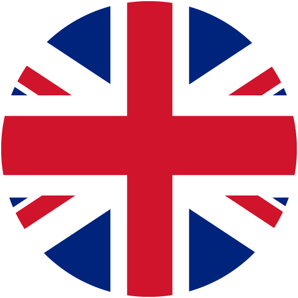
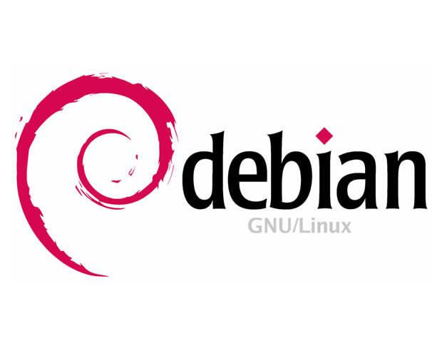

Présentation
Competences
Au fil des années, j'ai acquis plusieurs compétences dans le domaine de l'Informatique :
 Java
Java- JavaFX
 SQL
SQL HTML/CSS
HTML/CSS- Anglais
Projets
Implémentation d'un besoin client
Par groupe de 2, nous avons réalisé un programme en JAVA, permettant de trier et de classer des dépêches en fonction de 5 catégories. Pour cela, il fallait attribuer un score pour chaque dépêche. Il a donc fallu établir, d'abord, manuellement une liste de mots de référence pour chaque catégorie. Nous avons ensuite amélioré notre code pour qu'il fasse automatique ces listes. Par la suite, nous avons réalisé un rapport de plusieurs pages en anglais ainsi qu'une présentation de notre code.

Installation d'un poste de développement
Dans ce projet, j'ai installé une machine virtuelle. Sur cette machine j'ai installé Debian 11 avec KDE/Plasma ainsi qu'un logiciel pour le développement informatique. Je l'ai installé en utilisant le package Flatpack et Snap. J'ai ensuite réalisé une carte mentale afin de le refaire facilement. Ce projet c'est donc réalisé en 3 phases. La première consistant à découvrir l'environnement Debian et apprendre à l'installer sur une machine virtuelle que nous avons nous-mêmes créée. La seconde phase fut axée sur du contrôle d'instruction du processeur 6800. En enfin, la troisième phase avait pour but de réaliser cette carte mentale pour expliquer facilement comment installer une machine virtuelle avec Debian 11 d'installé.
Création d'une base de donnée SQL
Par groupe de 2, nous devions développer une base de données en SQL, sur le naufrage du Titanic. Nous avons dabord rassemblé les informations utiles sur les naufragés et le bateau ainsi que les canots de sauvetage. Ensuite nous avons créé notre base de données et nous l'avons rempli avec quelques informations. Puis avec l'aide de différentes requêtes SQL nous avons montré que notre base était fonctionnelle. Enfin, nous avons également rédigé un rapport.

Recueil de besoins
Par groupe de 4, nous avons rassemblé différentes informations sur une entreprise. Nous les avons ensuite rassemblé sur un site web que nous avons créé. Le site web est à destination d'élèves de 3e dans le cadre de leur recherche de stage. Le but était de leur présenter l'entreprise et ce qu'elle fait pour l'environnement. Afin d'être le plus efficace possible, nous avons dû nous répartir les tâches. Pendant le rassemblement des informations, nous avons fait 2 groupes de 2 afin de récolter des informations pendant que l'autre groupe faisait la mise en forme des données. Lors de la réalisation du site web, nous avons chacun réalisé une page ainsi qu'un CSS que nous avons réunie dans un seul.
Lien du siteContactez-moi
Ici vous pouvez m'envoyer un e-mail (non fonctionnel):